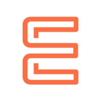
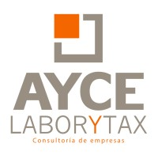
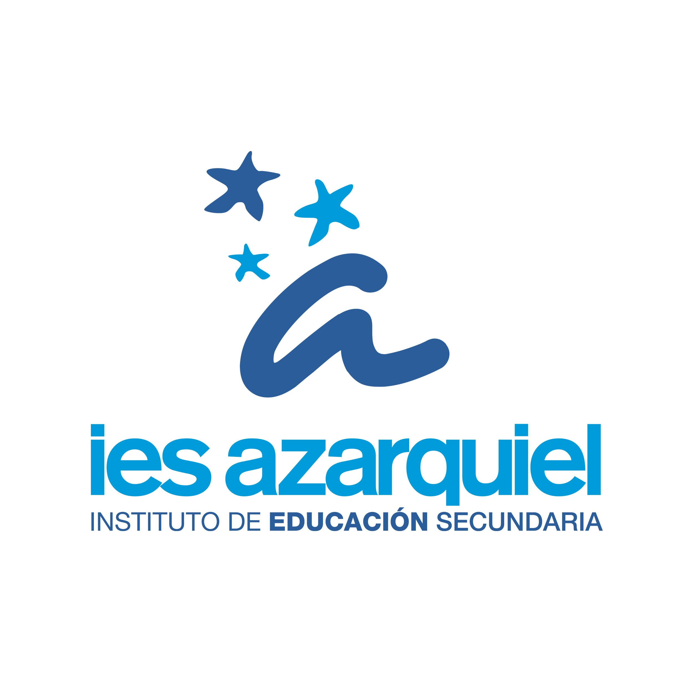

Desarrollador Full-Stack | Java, Spring y Angular
Illescas, Castilla-La Mancha, España
Correo electrónico: sanzadrian@hotmail.es
LinkedIn: linkedin.com/in/sanzadrian
Soy Técnico Superior en Desarrollo de Aplicaciones Web con una sólida base en tecnologías front-end y back-end. Tengo experiencia en el desarrollo de soluciones completas, combinando un enfoque práctico y eficiente con un aprendizaje continuo para ofrecer resultados de alta calidad.
Me apasiona colaborar en proyectos que exijan soluciones innovadoras y efectivas, siempre buscando mejorar mis habilidades técnicas y contribuir al éxito del equipo. Estoy comprometido con el aprendizaje constante y la mejora continua para mantenerme al día con las últimas tendencias tecnológicas.

Desarrollador Fullstack (abril de 2024 - junio de 2024, 3 meses)
Desarrollo y optimización de una aplicación web full-stack, gestionando tanto el front-end con Angular.js como el back-end con Spring. Implementación de soluciones eficientes que mejoran la experiencia del usuario y el rendimiento del sistema.

Técnico de soporte (abril de 2022 - junio de 2022, 3 meses)
Responsable de soporte técnico, administración de aplicaciones de gestión y mantenimiento de equipos para asegurar un rendimiento óptimo.

CFGS Desarrollo de Aplicaciones Web (septiembre de 2022 - junio de 2024)
CFGS Administración de Sistemas Informáticos en Red (septiembre de 2020 - junio de 2022)